Documents
Matches 1 to 46 of 46 » See Gallery
| # | Thumb | Description | Linked to |
|---|---|---|---|
| 1 | Addis, Austinette - Death Certificate Died in Cue, West Australia as Spencer | ||
| 2 |  | Addis, Austinette - Last Will Made in Bendigo c.1892 as Spencer | |
| 3 | 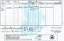 | Arthur Eamer - Birth Certificate Born Maidston South Australia | |
| 4 | 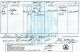 | Arthur Eamer - Death Certificate Accidentally killed .. drowned in a well at 2yrs of age at Maidstone, SA | |
| 5 | Austinette Spencer - Death Certificate | ||
| 6 |  | Austinette Spencer - Last Will and Testament | |
| 7 | 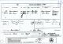 | Balcomb + Eamer Marriage Marriage certificate of Daniel Balcomb to Eliza Emour [nee Barry] | |
| 8 | 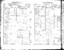 | Death Registration - Joshua and Eleanor - just days apart | |
| 9 | 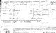 | Eamer Gade Marriage Marriage certificate of Walter Eamer to Marie Gade - Melrose, 1882 | |
| 10 | 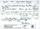 | Edward Henery LLOYD + Sarah Ann EAMER - Marriage Certificate 28th May 1888 at the residence of Ms Balcomb [Sarah's mother] | |
| 11 | 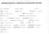 | Ernest Willows - 9yrs Hospitalised for 34 days with Synovitis (sic) of the knee. | |
| 12 | 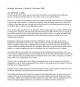 | Family Dispute - Painful Case Published in the Bendigo Advertiser Tue 21st Dec 1880 detailing the Willows family dispute being displayed in public. | |
| 13 | 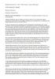 | Family Dispute - Trespassing (a) The first page detailing an account of the court proceedings to deal with the family dispute over the ongoing administration of their parent's estate. Ongoing now for in 5yrs or more. | |
| 14 | 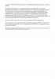 | Family Dispute - Trespassing (b) The second page detailing an account of the court proceedings to deal with the family dispute over the ongoing administration of their parent's estate. Ongoing now for in 5yrs or more. | |
| 15 | 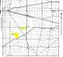 | Gade and Inglis Willowie Properties Shows the GADE and INGLIS properties and their proximity to Willowie townsite. | |
| 16 | 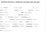 | Herbert Spencer Hospitalised for 72 days with Angular Curvature of the Spine | |
| 17 | 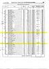 | Inglis Land Purchases - Willowie SA Government Gazette listing newly purchased land in the Hundred of Willowie - 1876 | |
| 18 | 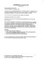 | Iserbrook A three masted barque built in 1853 | |
| 19 |  | James Eamer - Death Certificate | |
| 20 |  | James Eamour Convict #104 | |
| 21 |  | John William Eamer - Birth Certificate Birth Certificate of Johann Wilhelm Gade/Inglis - 1st May,1879 Mt Remarkable, South Australia | |
| 22 |  | John William Eamer - Death Cerificate Death Certificate of JWEamer, born as JWGade/Inglis | |
| 23 | 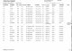 | John Willows - Annual Rates for Land and shop premises at Mundy St Bendigo | |
| 24 | 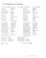 | John Willows and Eleanor Spencer Marriage registration. | |
| 25 | 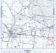 | Land Holdings at Marong (Bendigo) Both SPENCER and WILLOWS had neighbouring plots of farming land at Marong .. maybe this is how John Willows met Eleanor Spencer? | |
| 26 |  | Land titles Bald Hills Inman Valley Section 301 | |
| 27 |  | Land titles Myponga Secions 678, 679, 684 685 | |
| 28 | 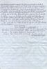 | Leana Mary Hamdorff - Correspondence - Page 3 Letter to JGEamer 08/10/2005 | |
| 29 | 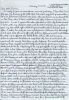 | Lena Mary Hamdorff - Correspondence - Page 1 Letter to JGEamer 08/10/2005 | |
| 30 | 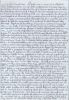 | Lena Mary Hamdorff - Correspondence - Page 2 Letter to JGEamer 08/10/2005 | |
| 31 |  | Lost in Action The final attempt to locate the whereabouts of Norman | |
| 32 |  | Map of Yankalilla and Myponga Showing sections farmed. | |
| 33 | 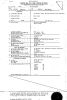 | Marie Gade - Death Certificate Died 13th December, 1939 - Aged 80yrs | |
| 34 | 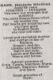 | Marjorie Winifred Connatty Death notice as Marjorie Gade | |
| 35 | 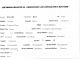 | Maud Willows - 13yrs Hospitalised for 13 days with pneumonia. | |
| 36 | 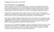 | Outrage in Marong Published Bendigo Advertiser Mon 16 Jan 1893 detailing vandalism and theft against John Willows | |
| 37 | 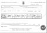 | Robert SPENCER - Death Certificate | |
| 38 | 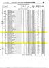 | South Australian Government Gazette - Inglis Land Purchases Listing of Willowie land purchase in the South Australian Government Gazette [Feb 10, 1876] | |
| 39 |  | TATE, Norman Willows Last Will and Testament | |
| 40 | 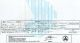 | Walter Eamer - Birth Certificate Son of James, born in Chain of Ponds, South Australia | |
| 41 | 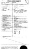 | Walter Eamer - Death Certificate Son of James, killed accidentally by fall from a wagon. | |
| 42 | 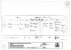 | Wilhelm Gade - Death Certificate Lived out his last days in the McGill home for Men .. SA | |
| 43 | 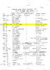 | Wilhelm Gade - Redirection of Mail Extract from Postal Re-Address Book held at Willowie Post Office | |
| 44 | 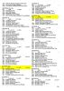 | Willowie Land Purchase History - page 1 A record of when the plots changed hands and to whom | |
| 45 | 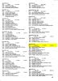 | Willowie Land Purchase History - Page 2 A record of when the plots changed hands and to whom | |
| 46 |  | Wounded The Dreaded Telegram informing the family that Norman had been wounded. |